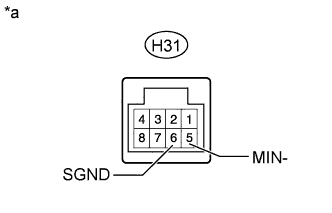
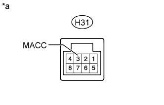
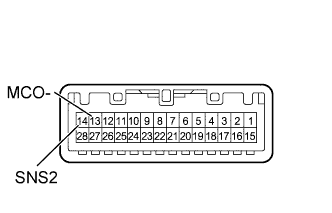
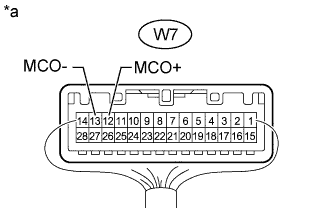

AUDIO AND VISUAL SYSTEM (w/o Multi-display) > Microphone Circuit between Microphone and Radio Receiver |
| 1.INSPECT RADIO RECEIVER ASSEMBLY |
|  |
Disconnect the H31 radio receiver assembly connector.
Measure the resistance according to the value(s) in the table below.
| Tester Connection | Condition | Specified Condition |
| H31-6 (SGND) - Body ground | Always | Below 1 Ω |
| H31-5 (MIN-) - Body ground | Always | Below 1 Ω |
| *a | Component without harness connected (Radio Receiver Assembly) |
|
| ||||
| OK | |
| 2.CHECK HARNESS AND CONNECTOR (RADIO RECEIVER - MAP LIGHT ASSEMBLY) |
Disconnect the H31 radio receiver assembly connector.
Disconnect the W7 map light assembly connector.
Measure the resistance according to the value(s) in the table below.
| Tester Connection | Condition | Specified Condition |
| H31-2 (MIN+) - W7-12 (MCO+) | Always | Below 1 Ω |
| H31-5 (MIN-) - W7-13 (MCO-) | Always | Below 1 Ω |
| H31-3 (MACC) - W7-11 (MACC) | Always | Below 1 Ω |
| H31-1 (SNS2) - W7-14 (SNS2) | Always | Below 1 Ω |
| H31-2 (MIN+) - Body ground | Always | 10 kΩ or higher |
| H31-5 (MIN-) - Body ground | Always | 10 kΩ or higher |
| H31-6 (SGND) - Body ground | Always | 10 kΩ or higher |
| H31-3 (MACC) - Body ground | Always | 10 kΩ or higher |
| H31-1 (SNS2) - Body ground | Always | 10 kΩ or higher |
|
| ||||
| OK | |
| 3.CHECK RADIO RECEIVER ASSEMBLY |
|  |
Disconnect the H31 radio receiver assembly connector.
Measure the voltage according to the value(s) in the table below.
| Tester Connection | Switch Condition | Specified Condition |
| H31-3 (MACC) - Body ground | Engine switch on (ACC) | 4.75 to 5.25 V |
| *a | Component without harness connected (Display and Navigation module Display) |
|
| ||||
| OK | |
| 4.INSPECT MAP LIGHT ASSEMBLY |
|  |
Remove the map light assembly (Click here).
Measure the resistance according to the value(s) in the table below.
| Tester Connection | Condition | Specified Condition |
| 14 (SNS2) - 13 (MCO-) | Always | Below 1 Ω |
|
| ||||
| OK | |
| 5.CHECK MAP LIGHT ASSEMBLY |
|  |
Connect an oscilloscope to terminals W7-12 (MCO+) and W7-13 (MCO-) of the map light assembly connector.
Check the waveform of the telephone microphone assembly using an oscilloscope.
| Result | Proceed to |
| Waveform synchronized with the voice input to the telephone microphone assembly is output | A |
| Waveform synchronized with the voice input to the telephone microphone assembly is not output | B |
| *a | Component with harness connected (Map Light Assembly) |
|
| ||||
| A | ||
| ||
| 6.REPLACE TELEPHONE MICROPHONE ASSEMBLY |
Replace the map light assembly (Click here).
Check if the same malfunction recurs.
| Result | Proceed to |
| Malfunction does not recur (returns to normal) | A |
| Malfunction recurs | B |
|
| ||||
| A | ||
| ||